Hammerers and The Anvil Guard are revised. Thunderers, Ironbreakers, and Rune Priests are unchanged. Portraits, map tokens, and small icons are shown for review only; no game assets were replaced. Open the one-page overview.
Unchanged
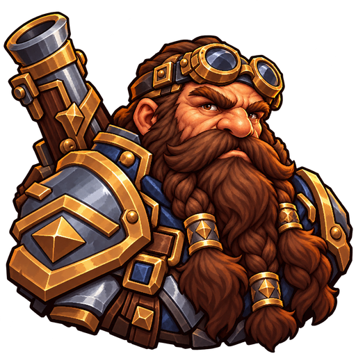
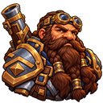
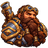
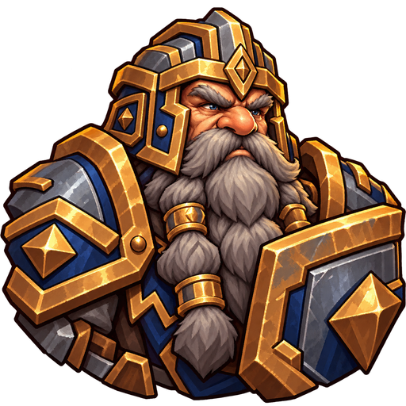
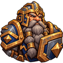
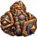
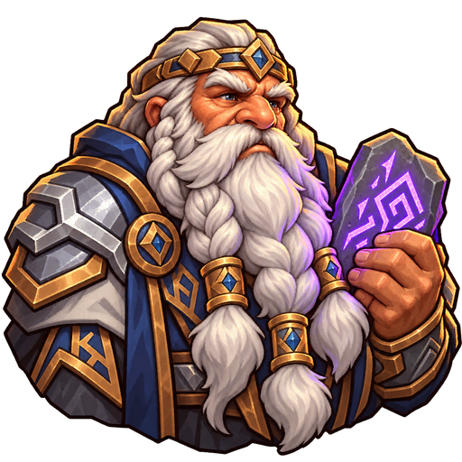
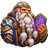
Helm and fixed hammer
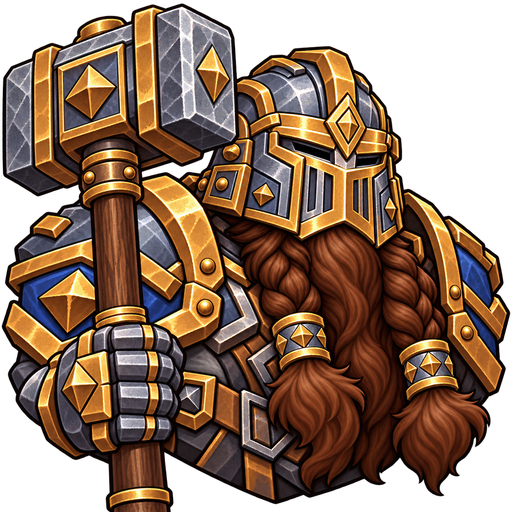
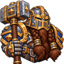
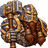
Slightly angled anvil shield
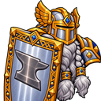
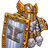